企画一覧
第49回幾徳祭で開催される企画一覧を見ることができます
ビンゴ
ステージイベント
縁日
スタンプカードはパンフレットに付属してるよ
景品もあるよ
わたあめ屋
木村研究室
食べ歩きに甘いわたがしはいかが？２サイズあるよ！
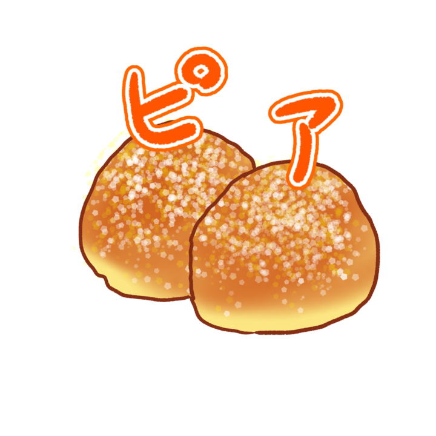
揚げパン
KAITpia
あの懐かしい揚げパン、出来立をとどうぞ！
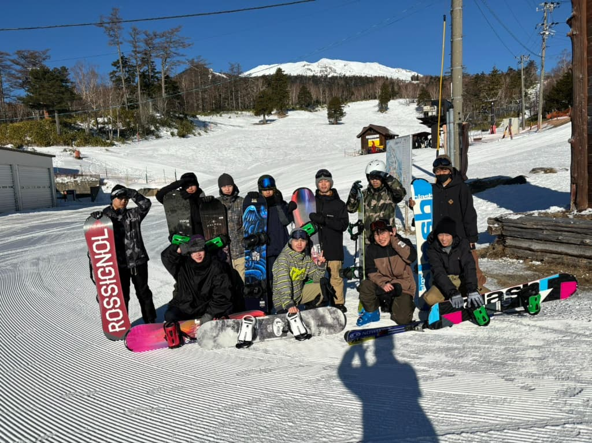
お好み焼き
Kait wintersportsサークル
このお好み焼たべないの厳しいって！
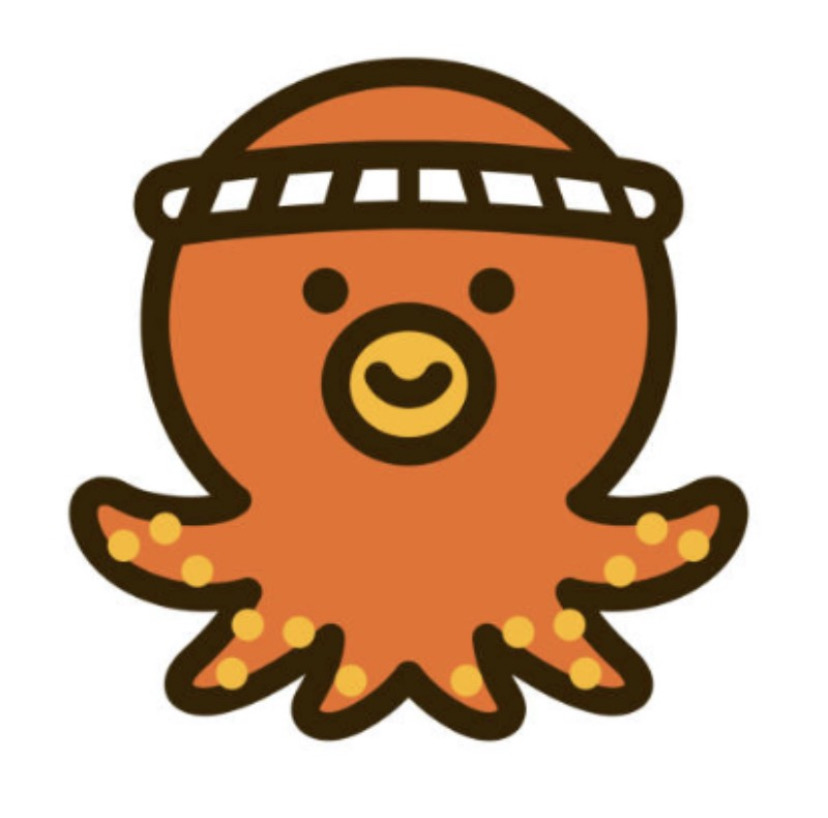
揚げたこ焼き
KAIT NLSC
管理栄養学科の皆で揚げたこ焼きを作ります。
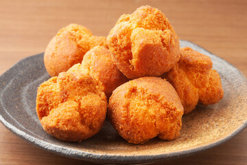
サーターアンダギー
バドミントン部
沖縄名物のサーターアンダギーです。
ホットドック
バレーボールサークル
ホットドック販売します！是非来てください‼
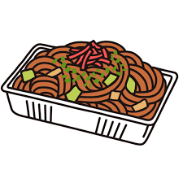
焼きそば屋台
ラグビー部
去年大盛況だったラグビー部の焼きそば今年も販売！！
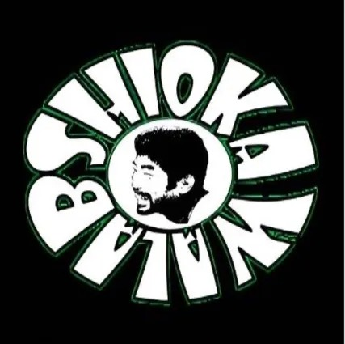
餃子BOSS
塩川研究室
国産の野菜ともち豚を使用した本格浜松餃子です！
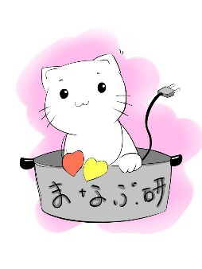
ハッシュドポテト
岡本学研究室
コスプレしてハッシュドポテト販売します！来てネ☆
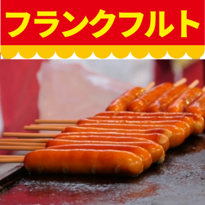
フランクフルト
岡本剛研究室
食べ応え抜群！チーズ入りやここだけの特別な味も！？
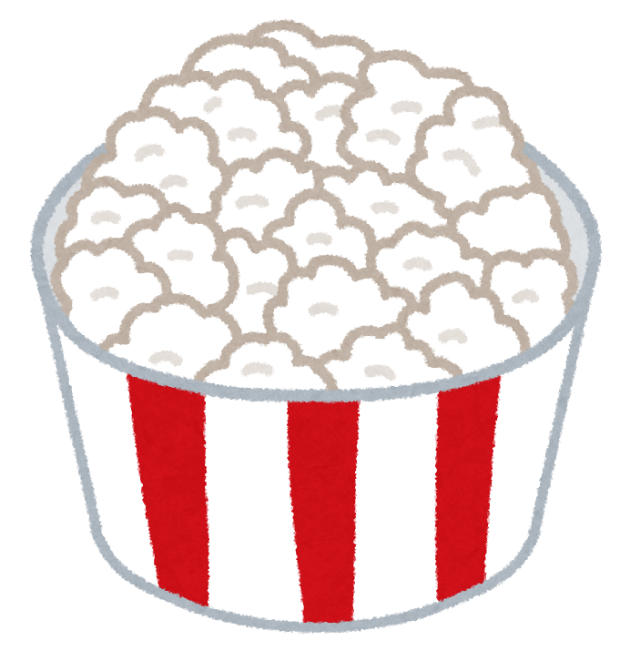
ポップコーンの販売
宮崎研究室
塩・キャラメル・バター醤油の3種類を楽しめます！
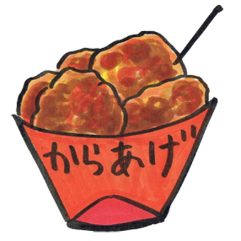
俺のから揚げ
体育会スキー部
スキー部みんなで作る、揚げたてのから揚げです！
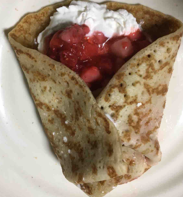
クレープ屋さん
陳研究室
文化祭限定！絶品クレープ販売中
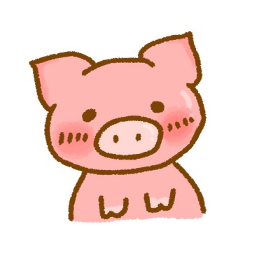
豚汁
文芸部
食欲の秋🍂あったかい豚汁で食欲を満たしてみませんか
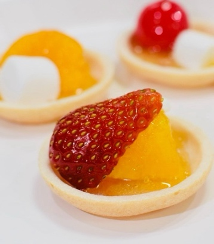
フルーツ飴
臨床工学科
サクサククラッカーとフルーツ飴の絶妙なハーモニー！
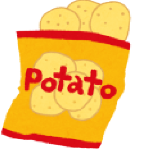
ヒアリングポテト
上田研究室
ポテトチップスです！
ぜひ食べに来てください